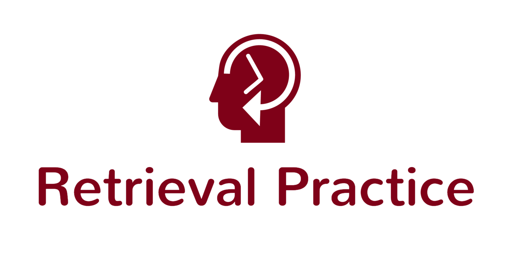
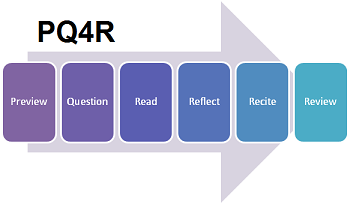
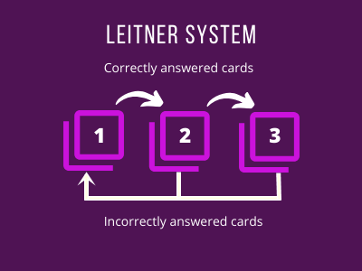
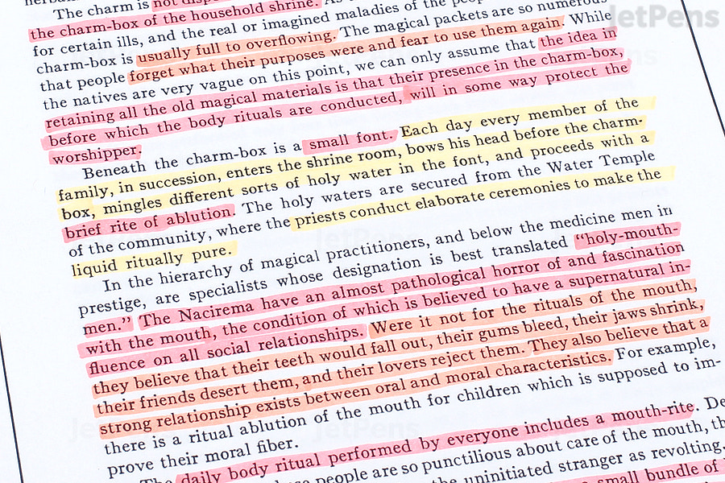
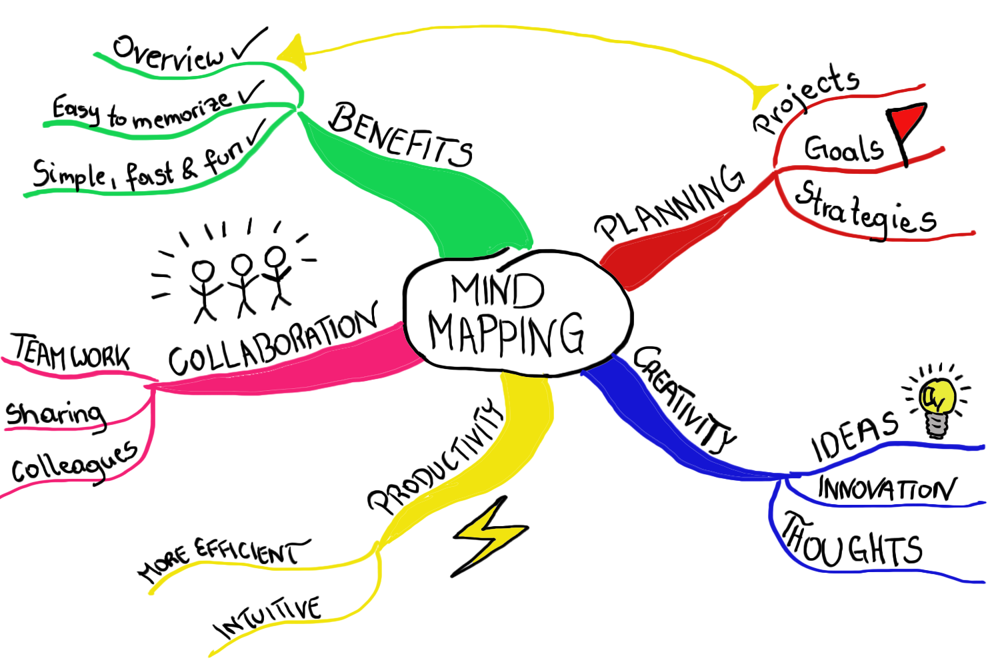
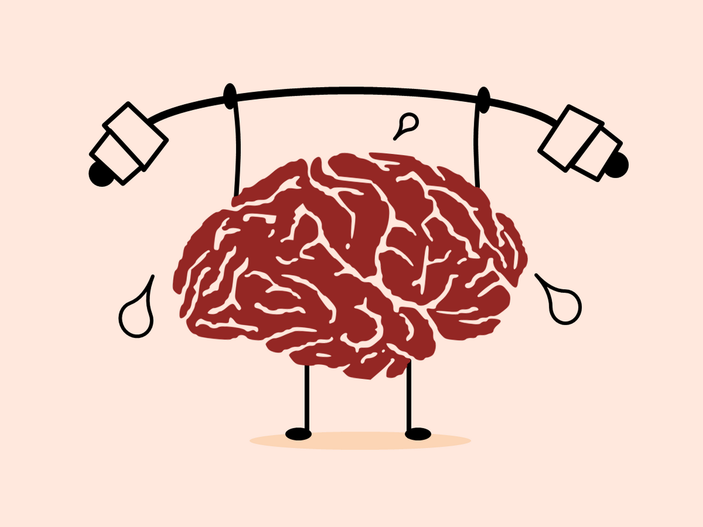

Christian Orsolino | Group one
Christian Orsolino | Group one
Online Learning: Tools, Technique and Adaptation to enhance effectiveness.
SQ3R METHOD

The SQ3R method is a reading comprehension technique that helps students identify important facts and retain information within their textbook. SQ3R (or SQRRR) is an acronym that stands for the five steps of the reading comprehension process. Try these steps for a more efficient and effective study session:
- Survey: Instead of reading the entire book, start by skimming the first chapter and taking notes on any headings, subheadings, images, or other standout features like charts.
- Question: Formulate questions around the content of the chapter, such as, What is this chapter about? What do I already know about this subject?
- Read: Begin reading the full chapter and look for answers to the questions you formulated.
- Recite: After reading a section, summarize in your own words what you just read. Try recalling and identifying major points and answer any questions from the second step.
- Review: Once you have finished the chapter, it’s important to review the material to fully understand it. Quiz yourself on the questions you created and re-read any portions you need to.
RETRIEVAL METHOD
Retrieval practice is based on the concept of remembering at a later time. Recalling an answer to a question improves learning more than looking for the answer in your textbook. And, remembering and writing down the answer to a flashcard is a lot more effective than thinking you know the answer and flipping the card over early. If you practice retrieval, you are more likely to remember the information later on. Below are some ways you can implement the retrieval process into your study routine.
- Utilize practice tests: Use practice tests or questions to quiz yourself, without looking at your book or notes.
- Make your own questions: Be your own teacher and create questions you think would be on a test. If you’re in a study group, encourage others to do the same, and trade questions.
- Use flashcards: Create flashcards, but make sure to practice your retrieval technique. Instead of flipping a card over prematurely, write the answer down and then check.
The PQ4R Method
This method takes an active approach to learning that improves memorization and understanding of the topic. Similar to the SQ3R method above, PQ4R is an acronym that stands for the six steps in the process.
- Preview: Preview the information before you start reading to get an idea of what the subject matter will be. Skim the material and read only the headers, subheadings, and highlighted text.
- Question: Ask yourself questions related to the topic, such as, What do I expect to learn? What do I already know about this topic?
- Read: Read the information one section at a time and try to identify answers to your questions.
- Reflect: Did you answer all of your questions? If not, go back and see if you can find the answer.
- Recite: In your own words, either speak or write down a summary of the information you just read.
- Review: Look over the material one more time and answer any questions that have not yet been answered.
- Write the subject/concept you are studying at the top of a sheet of paper.
- Then, explain it in your own words as if you were teaching someone else.
- Review what you wrote and identify any areas where you were wrong. Once you have identified them, go back to your notes or reading material and figure out the correct answer.
- Lastly, if there are any areas in your writing where you used technical terms or complex language, go back and rewrite these sections in simpler terms for someone who doesn’t have the educational background you have.
- Write down key points in red.
- Highlight important information in yellow.
- Organize topics by color.
- Don’t color everything—just the most important information.
- Grab a blank sheet of paper (or use a tool online) and write your study topic in the center, such as “child development.”
- Connect one of your main ideas (i.e., a chapter of your book or notes) to the main topic, such as “developmental stages.”
- Connect sub-branches of supporting ideas to your main branch. This is the association of ideas. For example, “Sensorimotor,” “Preoperational,” “Concrete operational,” and “Formal operational.”
- TIP: Use different colors for each branch and draw pictures if it helps.
- Kickstarts brain function and can help improve memory and cognitive performance.
- Releases endorphins, which can improve your mood and reduce stress levels.
The Feynman Technique
The Feynman Technique is an efficient method of learning a concept quickly by explaining it in plain and simple terms. It’s based on the idea, “If you want to understand something well, try to explain it simply.” What that means is, by attempting to explain a concept in our own words, we are likely to understand it a lot faster.
Leitner System
The Leitner System is a learning technique based on flashcards. Ideally, you keep your cards in several different boxes to track when you need to study each set. Every card starts in Box 1. If you get a card right, you move it to the next box. If you get a card wrong, you either move it down a box or keep it in Box 1 (if it’s already there). Each box determines how much you will study each set of cards, similar to the following schedule:
Color-Coded Notes
Messy notes can make it hard to recall the important points of a lecture. Writing in color is a dynamic way to organize the information you’re learning. It also helps you review and prioritize the most important ideas.
Mind Mapping
If you’re a visual learner, try mind mapping, a technique that allows you to visually organize information in a diagram. First, you write a word in the center of a blank page. From there, you write major ideas and keywords and connect them directly to the central concept. Other related ideas will continue to branch out. The structure of a mind map is related to the way our brains store and retrieve information. Mind mapping your notes instead of just writing them down can improve your reading comprehension. It also enables you to see the big picture by communicating the hierarchy and relationships between concepts and ideas.
Exercise Before Studying
Not only does exercise fight fatigue, but it can also increase energy levels. If you’re struggling to find the motivation to study, consider adding an exercise routine to your day. It doesn’t have to be a full hour at the gym. It can be a 20-minute workout at home or a brisk walk around your neighborhood. Anything to get your heart rate pumping. Exercising before you study:
Study Before Bed
Sleep is crucial for brain function, memory formation, and learning. Studying before you sleep, whether it is reviewing flashcards or notes, can help improve recall. According to Scott Cairney, a researcher from the University of York in the United Kingdom, “When you are awake you learn new things, but when you are asleep you refine them, making it easier to retrieve them and apply them correctly when you need them most. This is important for how we learn but also for how we might help retain healthy brain functions.”
When you’re asleep, the brain organizes your memories. Instead of pulling an all-nighter, study a few hours before bed and then review the information in the morning. No one wants to spend more time studying than they need to. Learning effective study techniques can ensure you are fully prepared for your exams and will help curve any looming test anxiety. Hopefully, with the techniques above, you can avoid cramming the night before and make your study time more effective. For more tips, download the infographic below.